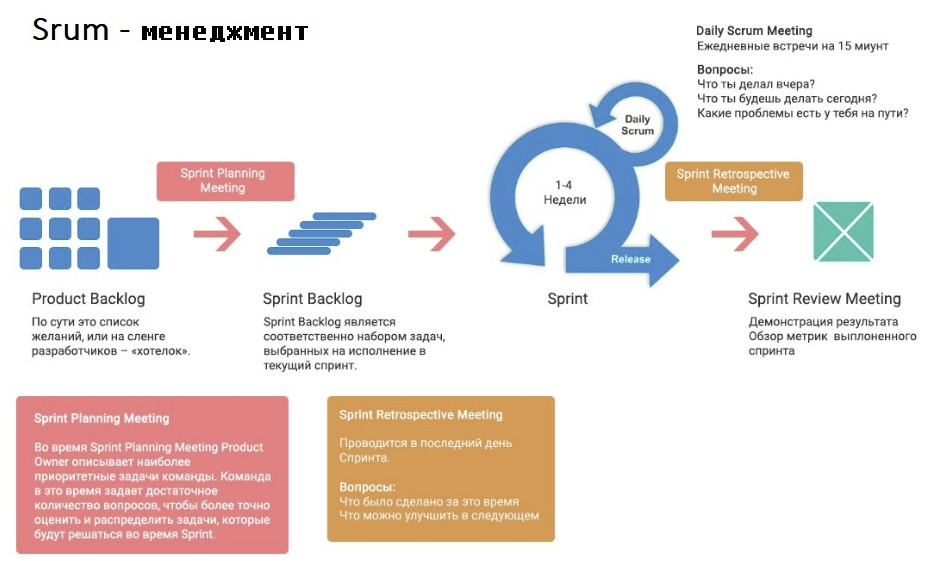

Методика для разработки и поддержки сложных проектов. Основали методологию еще вначале 90-х, но и по сей день, она пользуется особой популярностью в среде разработчиков.
Scrum - система достаточно простая в понимании и серьезно позволяет экономить время в процессе работы. Но подходит далеко не всем . Только многофункциональной команде с высокой самоорганизацией, которая в состоянии решить задачи с минимальной координацией — короче, идеально для Digital Nuts Agency.
Scrum логично использовать для прогноза и управления рисками проекта. Реализовать это можно с помощью итеративного подхода, на который он опирается.
Процесс работы со Scrum
- Нарезаем спринты по неделям (1 или несколько), в рамках которых делаем ряд задач по проекту.
- Можно проводить Daily Scrum, который помогает на ранних этапах заметить препятствие, способное позже помешать работе. В Daily Scrum члены команды отвечают на вопросы о том, что делали вчера, что будут делать сегодня и какие проблемы возникли в процессе.
- В конце спринта пересматриваем то, что еще предстоит сделать. Бывает такое, что вводные меняются — и, если это случилось, фиксируем изменения и смотрим на дальнейшие задачи с учетом этих изменений.

Пример использования Scrum
Допустим, сроки реализации проекта превышают 1 год. В рамках первых спринтов мы делаем базовый функционал (MVP). В интернет-магазине сначала можно сделать один способ оплаты из трёх, одну доставку из четырёх и синхронизировать ресурс с 1С.
И в бой: на основе пользовательского опыта и статистики можно корректировать беклог, а мы дальше работаем над следующими спринтами и развитием проекта в уже функционирующей версии.
Всё это позволяет сократить время на запуск проекта и получать прибыль, в то время, когда сайт всё ещё находится в разработке.
Хотите сайт по методу Scrum? Заходите на сайт или в офис, мы сделаем все по красоте .